Projectbook Introduction

Learn By Doing
~or~
The Great Big List of Software Project Ideas
Projectbook is a collection of over 50 software project ideas for people looking to learn a given language or technology but short on inspiration for what to build. These projects tend to vary in complexity and what they exercise.
My goal with this collection is to provide detailed enough specifications to get you started on project.
I've found that a lot of software tutorials are too simple and basic and that I only really learn through building something.
When learning a new programming language or library or technology, there's so much to take in that having to figure out what to build and what it should and shouldn't do can be enough friction to slow down any momentum and fun you're having.
In a lot of ways, these projects are just me sharing software and tools that I want to build myself.
Often a simple todo app is the non-trivial example project that people point to. It's a fine one because it has a variety of needs and state management. But it's so boring! And overdone! So these are the ideas beyond the todo list app.
What Makes a Good Learning Project
- Non-trivial -- more complex than "hello world" but less complex than a video editor
- A simple core with additional, more complex functionality to add
- Clear in what it does and doesn't do
- Something you understand from using yourself so you can more easily map the domain into code
Project Schema
The projects in Projectbook attempt to conform to a similar shape:
- The gist: a quick introduction to the project
- Spec: short for specifications; the functionality written out
- Concepts: aspects of development the project exercises
- Resources: anything that might be helpful, from assets to tutorials
- Mock-Ups: low fidelity designs for the project
- Examples: open source projects similar to the project
- Extra Credit: ideas for where to take the project beyond the initial specs
- See Also: related projects in Projectbook
Mindset
Please, please, please don't go into these projects thinking, "Wow, this idea is going to make me rich! It's the next start-up! It's the next big thing! Get those angel investors on the line!" I fall into this trap from time to time, especially when I'm dreaming big. I start thinking about monetization and hosting and the viability of something existing as a business. What you're trying to do is learn! Not start a business. Don't burden yourself with the responsibiity of doing anything other than experimenting at the beginning.
If you were to learn how to play guitar and you're playing simplified covers of your favorite songs, which is basically what we're doing here, would you start by thinking about how you'll record, mix, master, and release your cover album to make you rich? No! You'd practice them, play them for friends, maybe record them. Maybe one day you'd be in a cover band. Or even start writing your own original music. But don't concern yourself with anything other than learning and having fun right now.
When it comes to the user experience (UX) (the flow through your program) and user interface (UI) (the look of your program), look at similar programs and how they work. Your best bet is to take some time to do research and gather reference. Pay attention, take screenshots, and make note of how the apps work.
Reading Order
The order of the chapters in each section is loosely based on my perceived difficulty of them. My judgement may be off in some cases, but I think that's a pretty good bet.
Command Line Interfaces (CLIs) are first because I think they're generally a nice place to start because they don't require graphic rendering and a GUI. This makes their interfaces quite a bit simpler since there are only so many forms of input and output.
Some types of projects won't make sense for certain technologies. If you want to learn HTML, then ideas for CLIs won't be much help for you. Check out Websites instead.
However, don't read this book as you would a normal linear book. It's instead meant to be a place to browse around, experiment, find inspiration, and start hacking away and learning.
Wireframes & Design Assets
For projects with a GUI, it can be daunting to think about what it will look like and even potential assets.
Not a designer? That's totally okay!
Throughout the projects, you'll find wireframes, specs, and assets. You're welcome to use them or disregard them. Whatever you want. It's your project! Your learning. I'm just trying to help.
The nice thing about building GUI apps is that there are lots of graphical libraries and toolkits that you can utilize without designing or coding them from scratch, from things like GTK to Apple's platforms' various libraries to Material Design to Bootstrap.
Don't worry too much about it looking generic or boring when you're learning, unless what you're learning is how to polish a GUI! It really depends on what you want to get out of your project. Whether you use libraries or existing code or do it all from scratch.
Who the Heck Am I?

I am Brett! Nice to meet you. Thanks for checking this out. I'm a software programmer who has been doing some form of coding since I was 13. Professionally, I build web applications and APIs with Ruby, Rails, TypeScript, GraphQL, and web components. Personally, I dabble with all sorts of programming, from CLIs to game dev. I like checking out new languages and frameworks on the regular.
Since I'm not, let's say, a software programmer for smart refridgerators, there aren't a ton of ideas related to smart refridgerators. The focus is more on the software I use regularly or have to build. This is great because I understand the needs and functionality, which means I don't have to think too much about why something needs to do something and can instead focus on learning the technology.
I'd love to have more project ideas for different types of programming, like network programming and embedded hardware and such. Hopefully in the future!
Want to connect or follow along with other things I do?
Rights
Anyone is welcome to use the project ideas in this book to build software and try to make money if that's your aim. Best of luck.
I hope most of all that you have fun and learn with these ideas. But if you build the Next Big App or whatever from one of these ideas, kudos to you.
Also, ideas aren't worth much. What matters is what you make from those ideas!
Read more about the specific license aspects of the book.
Contributing
Do you have an idea for a project? Contribute it! Projectbook is open source and editing its contents is easy. Just find the project's Markdown file it, edit it, and open up a Pull Request on the project's GitHub repository.
Did you code an open source version of one of the projects and are comfortable sharing the source? Well, add it! That'll help people who are stuck or what to take it further or contribute.
Dig In!
View the projects in the sidebar or browse through the sections below to find a project that catches your interest. Then hack away and make some cool things! Learn a lot. And share what you make.
Command Line Interfaces
Command Line Interfaces (CLIs) are programs run from the terminal or command prompt. They're extremely broad in scope, as they can be used for any sort of computing—from starting a server to interacting with files.
Building a command line interface is great for learning a new language because you don't have to worry about the graphical interface and visual design. You can instead focus on the interactions and the work the program does. This simplifies things quite a bit. It also lets you learn the language's standard library, as most make writing CLIs quite easy.
If you use a lot of command line apps, then I imagine you'll be drawn to coding your own. It's a lot of fun. And no matter how simple the program is, all that matters is that it's useful. The Unix philosophy of small programs that can be chained together is really great for learning and building tools and commands.
Mindset / Targets
Pretty much any language you want to work will have some way of writing command line apps, from Ruby to Python to Node.js to C to Rust to Go. Especially when it comes to learning, you can just go for it and not worry much about technology choices.
But I think certain languages are better candidates for command line apps than others. Specifically languages that compile to a small, portable binary that's easy to install for users.
Let me break that down a bit more.
Let's take Ruby for example. Ruby is a scripting language that requires an installation of Ruby to be present to run. This means that if I write a Ruby program, for you to run it, you need to have Ruby installed. Or I need to package Ruby up and distribute it with the program. Ruby (and most programming languages) aren't small and super portable, so that's not really that fun. And installing Ruby is kind of a pain in the butt.
You know what'd be nice? If I could just provide you with a single file that you could run. And hopefully that file is pretty small. I don't want to waste your disk space or anything.
Well, that's what's called compiling down to a binary. The binary file is a packaged up version that can run on a lot of different computer operating systems without needing to have the language installed. Yay! Go and Rust in particular are really fantastic at this. You run some commands to compile the program and it can be used by others on the same OS as you. And it's not too difficult to generate it for other operating systems either.
So, it's not that Ruby isn't good for writing CLIs. I think the opposite! It's got a great standard library for it, and I find it quite intuitive and fun, especially for smaller scripts. Using Ruby for a CLI is great if you want to learn Ruby and that sort of programming. But it's not great for building programs you want to distrubte to others unless you know they will also have Ruby installed.
If I wanted to start a CLI project right now, I'd likely choose Rust or Go because I know it'd be possible to build and distribute the compiled version cross-platform.
Unix Utilities
The gist: clone simple, tried and true Unix commands.
When working with the command line, it's likely you have used of the core Unix programs like grep, cat, less, tail, or sort.
A great learning exercise is to rewrite those existing tools. Who knows, you might end up making a faster or better version.
One of the main concepts in Unix is being able to pipe data and chain together the commands. cat foo.txt | grep bar, that sort of thing. As part of rewriting these commands, you'll need to learn about stdin, stdout, and more.
Here are some simpler utilities that would be good candidates for building:
cat— output the contents of a file, line by line, to stdoutls— list the files of the current or passed in directorygrep— search through the contents of target files for a matchless— read-only file viewer, particulary useful for longer filessort— order lines alphanumericallytail— print last n lines of a file, can follow output with-f, useful for logswc— displays the number of lines, words, and bytes in a file
Resources
Examples
- brettchalupa/werds — a (poor) clone of
wcI made to help learn Rust
Spell Checker
The gist: CLI for checking a document or given folder of documents of plain text for typos.
An exercise in leveraging an existing dictionary and then reading files, checking them, and letting the user know about the issue and where it is.
If a typo is found, the program should exit with a non-zero status so it could be used as part of a CI pipeline or something.
It'd also be great if it could text in text via stdin via piping and such too!
Spec / Examples
sc blog/2020-10-23-my-favorite-albums.md
If it has no detected typos, then it would exit with a 0 status and not output anything. Silence is golden/no news is good news.
Let's say it has a typo, then it'd be non-zero and output to stderr:
Typos found:
- Line 4, Col 45: "teh" appears to be a typo
- Line 8, Col 4: "Borwsre" appears to be a typo
Stretch Goals
- Add the ability for the user to specify custom words and phrases that shouldn't trigger an error
- Smart detection of metadata and technical things like links and HTML and CSS and code fences in Markdown
- Make it interactive with corrections
- Make a GUI
Find and Replace (far)
As a Vim user, I'm pretty much always sweating large scale find and replace in my code. I'm going to be honest with you, I usually open up Sublime just for this since it's easy and works well. I know, I know, I'm probably doing Vim wrong.
But you know what? I'm over that! Well, I want to be over that. That's where this project comes into play.
I call it far in my head, for "(f)ind (a)nd (r)eplace".
I think about it as a command-line app, but I think it could also have a graphical desktop wrapper too for those who would want that.
Spec
- globs
- targeting specific files
- confirm interface
- respect the existing capitalization, like
far foo bar --respect-capswould do both upper and lowercase variations of the words - support regex
- do a dry run that outputs what would have changed but without doing it
Example Usage
Replace all instances of "Foo" with "Bar" in the current directory (and its children):
far Foo Bar
Or specify a glob of files in a given directory:
far Foo Bar src/**/*.rs
Tech On My Mind
Really any programming language would work that can all out to the system IO. But what would make this project really ideal would be the abiliy to compile it easily into a dependency-free cross-platform binary that's easy to distribute.
These are my top runners:
- Go
- Rust
tk-rs for the GUI would, in particular, match well with Rust for the library aspect of this.
Reference
Here's a screenshot of Sublime's Find and Replace interface:

Stretch Goals
- Respect the
.gitignorelocally and globally - Concurrency for files within a directory
- Able to efficiently process extremely large text files
Notebook TUI
The gist: build a Terminal User Interface (TUI) for authoring, reading, and managing one's notes on a file system.
This would be a way to manage one's notes all from the terminal but with a bit of an interface to make managing them easier. Mostly a project in learning how to build a non-trivial TUI. But maybe useful. Ideally it'd just store the notes as plain-text files that could be synced/backed-up with any cloud syncing program.
Specs
- View list of notes (which can be navigable) from file system
- Create notes
- View / edit a note
Extra Credit
- Search
- Tag viewer
Technology of Interest
See Also
HTTPal
The gist: write a CLI that makes HTTP network requests and responds with the output.
curl and wget are common programs used to transfer data to or from a server, like downloading a file over HTTP. This project is writing something similar to them. Start with just GET requests and then go from there.
I always call this idea httpal because it's kinda fun. It's your buddy for making requests!
Spec
This could look something like:
httpal https://openlibrary.org/books/OL7353617M.json
That would make a GET request to that API endpoint for Fantastic Mr. Fox and return the JSON, which could then be output to a file like:
httpal https://openlibrary.org/books/OL7353617M.json > fmf.json
Concepts
- Making network requests, often times available within the standard library of a language
- Outputting the response body
- Basic CLI interactions
Extra Credit
- Follow redirects
- Support different forms of authentication and request headers
- Support other HTTP methods like PUT, POST, and DELETE
- Support specifying a request body file, like a JSON file, to include in the request body
- Support other protocols! Maybe a better name would be
reqbud. 😬 - What if program specifically catered to those interacting with GraphQL APIs? That means it would always POST to the same endpoint but allow for configurable requests and variables.
gqlpal??? - What if there was a way to load requests for a project from a variety of spec files and easily make those requests? Like a CLI version of Postman or Paw.
See Also
Markdown Processor
The gist: Build a library and command-line tool that takes a Markdown file, converts it to HTML, and outputs it to stdout.
There will definitely be libraries out there that already do this for a given language, usually many of them. But the fun here is in taking a pretty manageable specification like Common Mark [TODO: check name] and writing your own parser and translator to HTML.
Spec
Let's call the program and lib marcus.
Command line:
marcus foo.md > foo.html
It'd be great if you could send it via pipes too, like cat foo.md | marcus > foo.html
If you're building the CLI out, it'd also be nice to have a library that you can use in that language as well.
Marus.to_html("# Hi\n[my link](/bye)\n")
Would output:
<h1>Hi</h1>
<p><a href="/bye">my link</a></p>
Concepts
- Parsing text into a data structure and converting it into HTML
- Pipes and CLI if you go that route
Stretch Goals
- Support converting HTML to MD
- Support bulk converting multiple files
- Add the ability to wrap the generated page in a template of HTML
See Also
Custom Markup Language
There are a lot of these, like TOML, YAML, Markdown, etc. But it'd be a worthwhile exercise to write your own so that you understand how they work. Whether the language is for authoring content intended to be HTML or a key-value configuration language, that's up to you. Just pick what sounds found and what you're interested in.
You'd want to:
- define the spec
- write out some examples
- build code that can read it and load it and do whatever with it
Concepts
- Processing text by converting from one language to another
- File IO
Spec
Let's pretend that Markdown doesn't exist. Poof! It's gone. Who's Mark Down? Never met 'em.
Imagine I wanted a plain text way to describe some richer text that converts to HTML. Okay, let's define the spec.
Imagine there's a file in a fictional language called Brettdown (ugh, terrible name). The file is named hello.bd:
Hi, my name is Brett. Brettdown is my new minimal language for writing. !Bold! and ~italic~ are both quite nice.
Content can be lists:
* Twin Peaks
* X-Files
You can even add order, like my favorite fruits:
1) Apples
2) Dates
3) Blueberries
Links look like this: ^My Website{https://example.com}
Write a command-line tool that converts that file into HTML that looks something like this:
<p>Hi, my name is Brett. Brettdown is my new minimal language for writing. <strong>Bold</strong> and <em>italic</em> are both quite nice.
<p>Content can be lists:</p>
<ul>
<li>Twin Peaks</li>
<li>X-Files</li>
</ul>
<p>You can even add order, like my favorite fruits:</p>
<ol>
<li>Apples</li>
<li>Dates</li>
<li>Blueberries</li>
</ol>
<p>Links look like this: <a href="https://example.com">My Website</a></p>
See Also
Simple Podcast Hosting
a.k.a. PodBud
a.k.a. Bring Your Own Hosting Podcast Tool
Podcasts are a wonderfully simple format. They leverage a feed, usually RSS, that can be consumed by clients who check regularly for new episodes and then add them to a library for a user to listen to.
The RSS feed contains the episodes and a link to the audio file and a bunch of metadata.
So what if there was a simple way to build and host a podcast RSS feed and files (and any other files, like a simple website) all from the command line without using a hosting platform?
It's sort of like the Static Site Generator but more focused on podcasts in particular and less on written content in Markdown.
Spec
Directory contains something like:
podcast.toml
assets/
audio/
1-title-slug-here.mp3
images/
1-title-slug-here.jpg
artwork.jpg
episodes/
1-title-slug-here.toml
2-title-slug-here.toml
3-title-slug-here.toml
README.md
The podcast.toml contains the global show details and info.
When the program is run, let's say it's called podbud build or something like that, then it would generate a _build directory that contains the RSS feed, the audio and image assets, and the episode TOML files.
The program would then have support for something like podbud deploy that would push the generated directory to something like Amazon AWS S3 or your own server or whatever for public consumption.
The process and flow would be ideal for using with some sort of CI service that builds and deploys whenever the show source is pushed somewhere or an episode is marked as published.
Here's what podcast.toml could look like for Roderick on the Line:
title = "Roderick on the Line"
description = "Merlin Mann's frank & candid weekly phone call with John Roderick of The Long Winters"
url = "http://www.merlinmann.com/roderick/"
artwork = "assets/images/artwork.jpg" # defaults to this
language = "en"
There are more required ones details for a show, these are just some of them.
Imagine an episode.toml:
title = "Episode 00: Suit of Vomit"
publish_date = 2011-09-09T07:32:00-08:00
description = """
Our pilot episode.
Steak, Babies, Hitler, Molecules, Hearing Loss, and the Best of the Liberal Arts.
Pretty much what you’d expect.
""" # supports Markdown, HTML, or just plain ole text
There may be more required fields for episides too. These are just some.
References
- https://help.apple.com/itc/podcasts_connect/#/itcb54353390
- https://podcasters.apple.com/support/823-podcast-requirements
- http://feeds.feedburner.com/RoderickOnTheLine
- https://toml.io/en/
Concepts
- RSS feed generation
- Reading from file system
Technologies
I'm particular interested in using Rust and TOML for this as I think it'd make it nice and portable. Go would be a good fit too, but really any general purpose programming language would work.
Extra Credit
- Support different hosts and make it configurable
- Add commands to CLI for creating an episode file
- Add support for an audio compressor/processor into the publishing chain to reduce audio file size load
- GUI that makes it even easier to work with and manage ones podcast.
- Add the ability to render the episodes on a website with a page for each episode and a general layout (maybe parse the RSS feed or just do it as part of the RSS building process)
- Newer Podcast metadata attrs
See Also
- Static Site Generator — similar in nature of processing files and converting into a specific format that then gets deployed to a host to be served over HTTP
Static Site Generator
There are so many of these. Nearly every modern language has one. It's largely a solved problem, but I bet there's still some space for innovation and experimentation. Plus, it's a really great learning project.
There's basically no GUI. It's a command line app. Or well I guess you could have a GUI, that'd be a unique offering that most of the static site generators don't offer since their command line apps.
But the gist is that a static site generator takes a collection of text files and generates HTML pages that form a website. There's usually some form of processing from the input language to HTML (parsing) and then handling the templating.
You could only use the standard library for this or make use of existing packages by other developers. Whatever you want to learn.
But the output of the command would be site's HTML and any other assets that are needed and could then be deployed to a server and accessed.
There's also usually a need for specifying metadata as part of a given file.
The benefits of a static site generator is that the people building the site can author the content in a friendly, less cumbersome format than HTML like Markdown. And then the generated files can be hosted pretty much anywhere. You don't need to run a server yourself and deal with various requests.
Let's say the tool is called ssg and you had a folder with the following files for a band website:
index.md
about.md
albums.md
tour.md
merch.md
When you run ssg . or just ssg it takes those files, converts them to HTML, and outputs them into the build directory or site dir or _build. Whatever you want to call it. Then that folder could be pushed somewhere for access.
There'd be:
build/
index.html
about.html
albums.html
tour.html
merch.html
And they'd be rendered with the proper semantic HTML with support for speciying metadata for the page. Starting with title and the meta description is enough to get started!
Concepts
- Reading files from the file system
- Processing them with some sort of language
- Writing the files to the disk
- Command-line interface
Features
- Markdown (or whatever) in
- HTML out
- Layout with a templating language that the Markdown for each page gets rendered in
- Ability to specify metadata for a given page like
titleand the meta description
Stretch Goals
- Support external CSS and JS, maybe even processors for those like Sass and TypeScript
- Add support for a server command, like
ssg servethat watches for changes to the site on the filesystem, regenerates the site, and then serves the build dir over HTTP - Handle multiple input types and processors or define your own mark-up language! That'd be fun
References
Examples
- Soy — a functional but barebones static site generator I made in Ruby; I had intentions for it being more finished, but a useful exercise in learning
See Also
Text Editor
Building something like nano, pico, or similar that opens a file into a buffer and allows you to navigate it and edit it.
This is a bit of a dream project, as I don't have much of a clue as to how to go about this. This is part of why it's appealing.
Spec
- Start the program
- Receive input to type characters
- Move cursor to edit document buffer
- Save document buffer to disk
- Load a file from disk
Libraries
Many programming languages have great support for loading and using code written by others within your own code. These are called libraries. They often make it easier to do something that's otherwise difficult or annoying to do on your own. They're also helpful for reading how other people program, as the source code for open source libraries is accessible to read.
Languages sometimes have their own names for libraries... Sometimes their called packaged or dependencies. Ruby calls them Gems. Rust calls them Crates. Node/NPM/Yarn calls them Packages. They're all generally referring to the same things—code written by others that you can use.
Maybe you find yourself repeating the same three lines of code over and over and you'd like to make it one. That's a great case for a small library! Or maybe you've written some code that's not specific to your project and could be used by others. That's a great case for a library too!
The projects that follow are ideas for projects you could write that others could use. Each language has a different way of sharing libraries with others, so you'll have to do some research into whatever language you're using.
Writing an open source library can be a lot of fun and quite rewarding. Instead of a graphical interface or a command line interface, you’re defining a programming interface (API) for others to use and integrate with.
You’ll want to have well thoughtout functions and sensible naming. And you’ll want to have thorough documentation to make it clear to use. But don't worry if there are issues as you're starting out, you'll get better the more you build libraries and APIs.
Whether or not you open source the code you write is up to you. Consider how finished your code is and if it's stable enough for others to use. Writing your own version of a popular library can be a great way to learn a language.
What writing libraries are great for:
- Writing focused code that accomplishes one thing (or a few related things) really well
- Learning API design and documentation
- Writing well-tested code
- Getting more familiar with open source
HTTP Client
The gist: wrap the language you're learning's HTTP interface with a more friendly API.
Many programming languages come with libraries for making HTTP requests since it's such a common need for programmers. Sometimes the interfaces that the standard libraries provides aren't that intuitive.
An Example
Let's look at what this could be like with Ruby. Ruby provides the net/http library for making HTTP requests.
You would use it like this to fetch the JSON from a URL and retiurn it as a Hash in Ruby:
require 'net/http'
require 'json'
url = URI('https://openlibrary.org/books/OL7353617M.json')
response_body = Net::HTTP.get(url)
res = JSON.parse(response_body)
res (truncated) is a Ruby Hash that looks like:
{
"publishers"=>["Puffin"],
"number_of_pages"=>96,
"isbn_10"=>["0140328726"],
"covers"=>[8739161],
"key"=>"/books/OL7353617M",
"authors"=>[{"key"=>"/authors/OL34184A"}],
"ocaid"=>"fantasticmrfoxpu00roal",
"contributions"=>["Tony Ross (Illustrator)"],
"languages"=>[{"key"=>"/languages/eng"}]
}
Instead of repeating those three lines of code for every single request you want to make to get the parsed body, you could write a library for it.
Let's say the library is called Hyper, for the "Hyper" in HTTP. It might look like:
require 'net/http'
require 'json'
class Hyper
def self.get(url)
url = URI(url)
response_body = Net::HTTP.get(url)
JSON.parse(response_body)
end
end
All you would have to do is:
Hyper.get('https://openlibrary.org/books/OL7353617M.json')
To have the same output as before.
You'd then package that code up and share it as a library to use it in your various projects and for others to use.
This is a very simplified example, but I think it illustrates what this project could look like. A good library would validate the input, provide helpful errors, and allow specifying the needed options.
In the case of Ruby, if this was published as a Gem, people would install it in their Gemfile and use it throughout their code. Pretty neat!
Extra Credit
- Add support for POST, PUT, and DELETE methods
- Support specifying authentication headers
- Raise errors when the HTTP response is not successful
- Follow redirects
- An HTTP library is quite nice. Something even neater would be a library that specifically makes making GraphQL requests easier since they're always to the same endpoint but the request body varies. Seems like a good case for a library!
See Also
- HTTPal — write a CLI for making HTTP requests; could use the library written here!
- API Wrapper — write wrapper for an API to make it easier to consume the API
API Wrapper
The gist: write a wrapper for an HTTP API to make it easier to work the endpoints and returned data.
When consuming an API, especially a foundational one to your application, it can be much easier to interact with a library written in the programming language you're using rather than making HTTP requests and parsing the response every single time. By building an API wrapper, you'll be able to create a more idiomatic API for the language you're using in, make configuring the API easier, and have more control over consistently manipulating the response.
Spec
- Pick an API or write one
- Write code to make it easy to interact with the available endpoints
- Use the code you wrote wherever you want to fetch and display it
Concepts
- API design (for those using your library)
- Consuming an HTTP API
- Packaging up and sharing code
Mock-Up
Let's say I want to display a random dog photo in my application whenever a user views a given page. I could use the Dog API for that. If I'm working with Ruby, I could make the request using:
require 'net/http'
require 'json'
url = URI('https://dog.ceo/api/breeds/image/random')
response_body = Net::HTTP.get(url)
res = JSON.parse(response_body)
res["message"]
That's kind of a bummer to use every time I want a random dog image! Sure, an HTTP client, would reduce that burden, but maybe I want to display different dog photos throughout my app and want to reuse that code. I'd introduce something like:
require 'net/http'
require 'json'
class DogApi
RANDOM_URL = 'https://dog.ceo/api/breeds/image/random'.freeze
def self.random_image_url
response_body = Net::HTTP.get(URI(RANDOM_URL))
JSON.parse(response_body)["message"]
end
end
Then in my application, all I would have to do is call DogApi.random_image_url to have a URL returned for a dog image. Much simpler.
The above code is a bit... naive. It doesn't handle errors, which could certainly happen. What if the API is down or we get rate limited? We'd want something useful to happen for those using the wrapper. That's part of the joy of using an API wrapper. The best API wrappers handle errors and respond in a away appropriate for the language. For Ruby code, it could raise an exception.
Even within just one class and a class method, there are some design decisions I made. I called the wrapper DogApi instead of just Dog because it's more specific, and Dog is too generic of a name in my opinion. I wouldn't want to inadvertantly interfere with it. I also named the method .random_image_url because it makes it clear what's returned—a URL to the image. If it was just called .random, it wouldn't be clear what's returned—is it a hash, a Dog object, or an image URL?
There is a fine line to walk when developing an API wrapper. You want to remain true to the API you're wrapping so that the patterns and names aren't wildely inconsistent, but you also want to be clear and use the idioms of the language you're using.
Examples
- One of the first open source projects I ever made was a Ruby wrapper for the Phaxio faxing API because I needed it for a freelance project.
- sferik/twitter — Twitter API wrapper written in Ruby
Extra Credit
- Document the available interfaces for your library
- Publish your wrapper if one doesn't exist already and if the API is public
- Support all of the API endpoints
- Support the params that can be passed into the requests
See Also
Authorization Lib
The gist: build a library that allows developers to define permissions for a given action a user can take.
Authorization (whether or not a given user is able to take an action) is a major part of building any application with users, even more so if there are different permission levels. Since it's such a common need, it can be really helpful to have a library for a given framework or language to do so.
Note: authorization is different than authentication. Authentication is checking if a client/user is who they say they are. Authorization is about allowing access to specific actions.
Spec
- Ability to define actions and their logic for access
- Convenient methods for checking access for a given action with a user
- Easy to unit test
Concepts
- Logic
- Composition
- Library development
Mock-Up
In plain Ruby, this could look something like:
class PostAuthorizer
def initialize(user, post)
@post = user
@user = user
end
def show?
true
end
def update?
@post.organization.users.include?(@user)
end
end
Then, within the code where you want to check, you'd call out with:
if PostAuthorizer.new(user, post).update?
post.update!(params)
end
That's all well and good! It's just simple Ruby objects and easy to test. But it's not exactly the nicest API. The code for defining an authorizer could be simplified. Maybe there's a way to define multiple actions that are available to all or a default. Something like:
class PostAuthorizer
public :show, :like
end
What if there was a simpler API for checking authorization, like:
authorized_to_update?(user, post)
authorized_to_read?(user, post)
authorized_to_like?(user, post)
What's possible for defining these sorts of APIs will vary based on languages, but these are just some off-the-cuff ideas. Whether you use inheritance or composition or functions is totally up to you.
Examples
- pundit is a mature and nice Ruby authorization library
ORM
The gist: build a library that makes it easy to read and create data in a database from objects in your code.
ORM stands for Object-Relational Mapping, and it's usually the glue between your application code and the database. So instead of writing SQL directly, SELECT * FROM users WHERE email='foo@example.com' LIMIT 1, and instantiating an object with that data, you'd use the ORM to do that. It might look something like User.find_by(email: "foo@example.com"), which would return an instance of the User class.
ORMs are great for a variety of reasons:
- Generally a friendlier API than the database underneath
- Can help protect your application from running harmful queries
- You can craft queries in the language you're working in
- Easier to mock and stub when testing
What database you use is up to. SQLite is a small, portable SQL database that is great for developing against.
Specs
- Ability to find a record by ID or a given table column
- Create an object or struct in the language that you can then work with
- Ability to update a database record
- Ability to delete a database record
Concepts
- API design
- Databases
Extra Credit
- Support additional queries
- Support advanced queries like multiple
WHEREclauses - Try to make your ORM usable with a different flavor of SQL and see if it works
Examples
- sequel — Ruby ORM
- activerecord — Rails ORM
- prisma — Node.js ORM
- sqlalchemy — Python ORM
- diesel — Rust ORM
- gorm — Go ORM
Unit Testing Lib
The gist: write a library that runs unit tests for the language you're learning.
Writing automated tests that verify your code's correctness is important. So important that pretty much all modern languages have unit testing functionality built right in. But writing your own testing library is a great way to learn the language, as you'll have to understand how to build friendly APIs, compare types, scoping, and run the tests.
Specs
- Define what the test syntax will look like for your library
- Add support for a basic equals comparison
- Write a test runner that executes the tests
- If the tests pass, exit with a 0 status
- If the tests fail, output what failed and exit with a non-zero status
Extra Credit
- Add support for an includes comparison
- The sky's the limit with other comparisons
Resources
- Test Runner from Scratch — excellent screencast on doing this in Ruby
- Jest — for JS/TS
- minitest — for Ruby
- RSpec — for Ruby
- Ginkgo — for Go
Background Job Processor
The gist: build a library that allows clients to define jobs that get processed on an asyncronous queue seperate from their application.
A really common need in an application is to offload long processing tasks to a background job queue. The job queue could be for something like sending an email where it doesn't need to happen immediately. Or it could be for processing something really important, like an order, that needs to call out to a variety of APIs and has many side effects. Maybe a large export file needs to be generated.
Whatever the need is, background job processors are critical to building back-end applications.
Don't expect to make something in a few hours that's stable and ready for the limelight. As always with these projects, this is for learning!
Spec
This project is fairly complex, as you'll have to:
- Define the libraries API for building jobs
- Keep track of the jobs in the queue
- Process the jobs in queue
- Manage their state
- Have some way for checking in on which jobs have been completed, which are waiting, and which failed
Examples
- Sidekiq — solid background processor for Ruby backed by Redis
- Bull — background job processor for Node backed by Redis
- Celery — Python background processor
- work — Go background processor
Websites
What follows are ideas for websites that you could build that don't require any back-end. This means there's no need for a database or a server to handle the requests. These are great ideas for getting started with web development by focusing on HTML, CSS, a little JavaScript, and some templating.
Starting Out
You'll need an editor and a browser! That's it. That's part of the joy of building software for the web. There's not too much you need. Start with editing HTML and CSS directly and opening the file in your browser. Don't worry about content management systems like Wordpress or creating themes or templates. Start with the basics and go from there.
Visual Studio Code is a commonly used and free editor. I'd suggest starting there.
With these projects, you'll learn about semantic structure, organizing information, making it look nice, and adding some light interactivity.
Resources
Once you're comfortable with the basics of HTML and CSS, the best resource is your web browser's Developer Tools for inspecting the source and seeing how other sites are constructed. Any website that loads in your browser has source code you can look at to understand the elements being used and the styles that are applied to it.
Tutorials
Hosting
You'll need a host to serve your website code to the world. Start with Neocities. It's a free website host where you can build simple websites and share them with others. It's fun, has a sinmple interface, and won't bog you down with a bunch of extra stuff, which is great when you're just getting started.
Other options that are free but a bit more advanced to use:
- GitHub Pages
- Netlify
Static Site Generators
When you're building more complex websites beyond just a few pages, a static site generator (SSG) will be massively helpful for sharing page HTML across reuseable templates, authoring content in something other than HTML, and organizing the content.
There are so many static site generators that it's pretty exhausting. The nice thing is that they usuall y don't require you to know another language aside from whatever templating language they use (usually an extended HTML language).
Here are some of the ones I've used:
Content Management Systems
You may have heard of a Content Management System (CMS) before. Wordpress, a blogging tool, is a widely used CMS. Joomla is another popular one. They let you author content and manage your site, often via a web interface, with the ability to customize the site's templates. Content is often stored in a database, and they tend to be a bit more complex than SSGs under the hood.
You certainly can build a website with a CMS, but sometimes they hide the parts you want to learn via themes and templates. Wordpress is one of the earliest programming experiences I had, but it was years later until I started programming websites from scratch. I wish I had learned the fundamentals first.
Link List
A Link List is a website that's just a list of links. Pretty simple! It's useful as a simple homepage or landing page for someone to use to collect all of their profiles online. I also call them Link Trees and Link-in-Bio websites.
A Link List is an ideal candidate for a learning project because it's simple (only one page and a few elements) and it's actually useful. You could build this and host it and actually use it for your own needs.
Here's a screenshot of https://brettchalupa.neocities.org — a Link List I build for myself as an example.
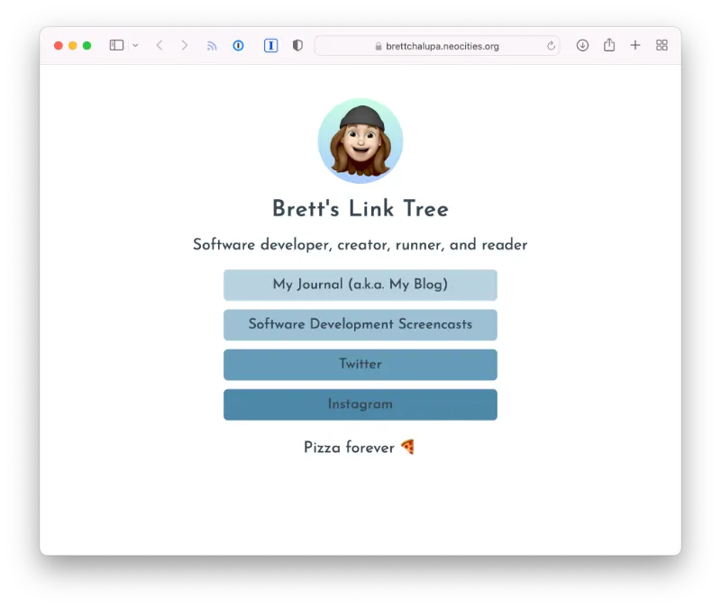
Concepts
- HTML and CSS basics
Resources
- Link-in-Bio website screencast — I made this video to introduce the basics of HTML and CSS.
- View the source code for my site above.
See Also
- Linkbud — if you want to build an app to dynamically build lists and manage them, check out this project.
Personal Home Page
Want to make a website for yourself on the web? Well, build out a home page. It'll be your own little space where you can put whatever you want. Even in the era of social media, it's nice to have a place where you can have full control and experiment.
Ideas for what to share on your home page:
- Projects you've completed or are working on
- Photos you've taken
- Creative writing
- Résumé, if that's something you want to share
You can make your home page as simple or complex as you want. That's the joy of it. It can be one page, a couple pages, or hundreds.
Reference
www.brettchalupa.com — this is my home page! I've maintained it for over a decade, and it's a beloved archive of what I've been working on over the years.

Other home pages:
- gahlorddewald.com — my mentor's home page where he shares his music, writing, and more
Media Log
The gist: build a simple website to keep track of shows you've watched or books you've read.
I love keeping track of the books and movies I've watched. Sure, there are sites like Letterboxd and Goodreads to keep track of them, and they have all kinds of information and covers and such. But who needs all that?
For this project, build out a website to keep track of media you've finished. You could have a list of games you played, books you've read, your favorite albums, movies you've watched.
Would a table be nice for rendering columnar data like when you finished it, your rating, the author, etc.? Or maybe just a simple list?
Here's what a basic website utilizing lists of read books could look like:
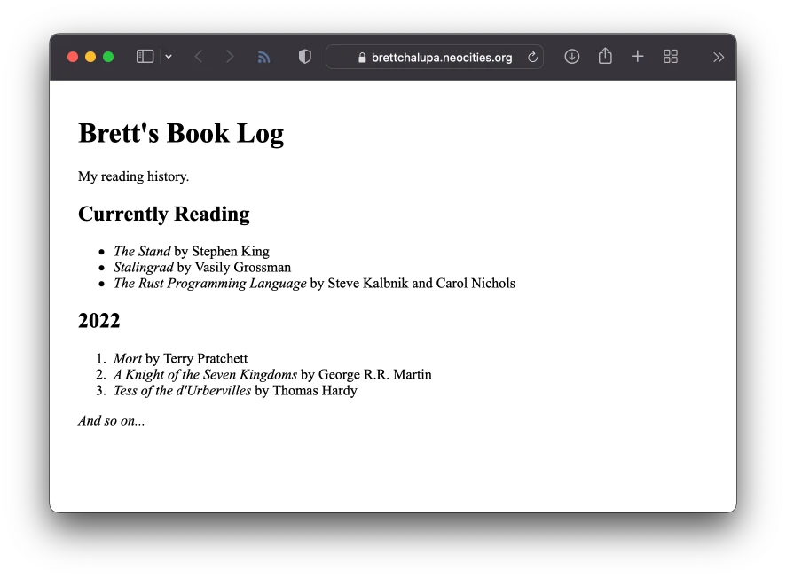
Extra Credit
- Try out different approaches to layout to see what's most pleasant.
- Make the website a web application so that you can manage the list of media dynamically.
Reference
Product Page
The gist: code a website promoting a product you care about.
If you're looking for an idea for a website with a bit more focus, build out a page for a particular product you're fascinated with. Maybe it's a video game console or type of cereal. I don't know what you're excited about. I'd probaby make a website dedicated to the core reasons why Saltines are underrated crackers. But that's just me.
A page specifically meant to feature a product will require you to think a bit more visually to really sell it. While the other website ideas are about building out basic content structures, a product page has a goal! Sell the product.
Spec
What a product page could contain:
- Introduction to the product
- Images of it
- Video of it
- Detailed specifications
- Examples of how it can be used
- Who it's for
- Why ya' need it!
- Link to buy it
Reference
Playdate — charming, polished, visual, clear
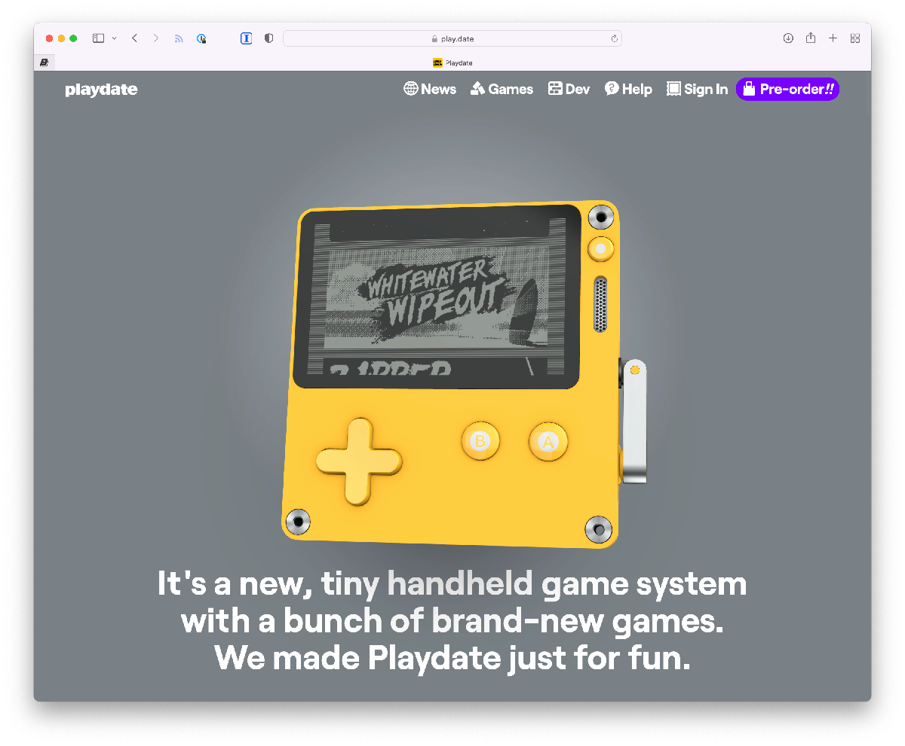
Fansite
What's something you absolutely love? The thing you know every single little detail about? The thing you won't stop talking to your friends about?
Take that idea and make a fansite. The fansite can be as complex or simple as you want it to be. Whether you code it by hand or use a static site generator, it's totally up to you. But the nice thing about a fansite is that you can build it and it can be done and exist. Sure, maybe you could update it from time to time, or you could just let it exist and share it with the world.
A fansite is the first thing I ever made on the web. When I was a teen, I used Geocities to make a fansite for the Trigun anime series, a show I was particularly obsessed with at the time. That was my first exposure to building websites, and I haven't stopped since. There's a real joy to writing about something you love.
A great fansite makes use of text and images and even videos. What sets it apart from something like Wikipedia is that it's about your fandom, not the facts. Write about what the thing means to you and how it has impacted you. Share your stories and thoughts.
Things I want to make fansites for:
- Bright Eyes / Conor Oberst — my favorite band! I'd review each album and write about why I love his music so much
- Twin Peaks — my favorite show! I guess maybe even just a David Lynch fansite would do
- Haruki Murakami — my favorite author! I've read most of his books, and I'd be happy to write about him and what they mean to me
Reference
The GBVSongbook — fansite for Guided By Voices song tabs
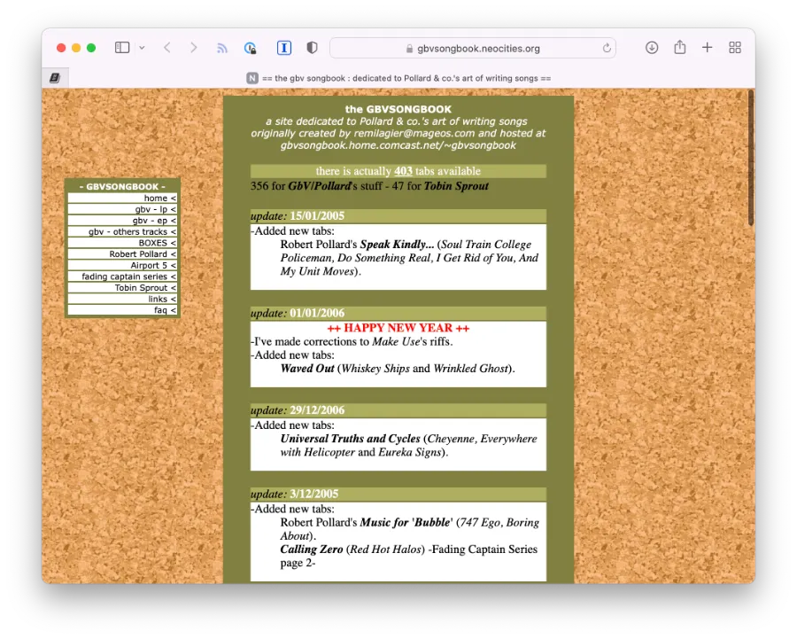
Distant Skies — a Crystalis game fansite

Other examples:
- Digital Emelas — Ys game series fansite
Blog
The gist: Create a blog where you write your posts by hand.
Blog is short for web log. It's a way to write updates, like a journal, and publish them online. While fancy blogging platforms exist like Wordpress that handle managing the content and rendering the HTML that readers load, you could, you know, just write it all by hand. That's what this project is!
Specs
- Home page that lists your blog posts
- Write multiple blog posts in HTML
- Share styles across pages with one CSS file
To Consider
- How's writing the content directly in HTML?
- What's tedious about managing all of the posts and URLs directly? What if you wanted to change the layout of every post?
See Also
- Blogging Platform — build out your own blog authoring web app
Reference
- Zonelets — a simple blogging engine built upon a similar premise
- Ruby on Rails blog — just an example of a blog, for reference
Web Components
Web components are a modern way to define custom HTML elements that can encapsulate mark-up, styles, and JavaScript.
I find the idea of portable web components to be particularly compelling because they could be used and loaded on an as-needed basis and be much easier to integrate into a web page. In the past, when libraries would be primarily loaded via a JS <script> tag and then be available globally, you had to ensure you set them up and configured and structured the DOM appropriately. Otherwise it would break. This is pretty brittle.
But with web components, the styles, logic, and DOM structure can be quite a bit more contained. How data gets passed into the component can vary and does require knowing the DOM strucutre, but I find it to be quite a bit more clear and simpler.
There are lots of web component libraries out there, but some primary ones to look at would be React, Vue, Lit, and Stencil. Or even just use what the DOM gives you natively without any sort of library.
These projects cover dealing with state, data, browser APIs, user interactions, and more.
Technologies
- Vanilla JS! There's an API for custom elements that modern browsers support.
- Stencil.js — thin wrapper of the native component API
- Vue
- Lit
- Svelte
- React
Resources
Responsive YouTube Video Embed
This is a really simple little project and component. It's basically just a way to take a YouTube video and embed it in a resilient way that can be responsive since that tends to be an issue when it comes to their default embed. It usually requires a CSS snippet, but it'd be nice to not need that and instead have an easy way to embed a YouTube video.
Also, it'd make it possible to take the YT video URL or just the ID and render it accordingly.
YouTube's embed snippet they provide looks like this:
<iframe width="560" height="315" src="https://www.youtube.com/embed/logjpKitcLo" title="YouTube video player" frameborder="0" allow="accelerometer; autoplay; clipboard-write; encrypted-media; gyroscope; picture-in-picture" allowfullscreen></iframe>
You can see it hardcodes the width and height, which is not what we want. We instead want the video to be as wide as its container or specified width, and then for it to reduce in width on smaller viewports while maintaining its aspect ratio.
This image illustrates the main problem with YouTube's default embed code with larger sizes:

Spec
Specifying via just the video ID:
<yt-vid id="logjpKitcLo" />
Supporting the full video URL, which it'd be nice to easily parse out:
<yt-vid id="https://www.youtube.com/watch?v=logjpKitcLo" />
Supporting the embed URL just because:
<yt-vid id="https://www.youtube.com/embed/logjpKitcLo" />
This would output a responsive YouTube embed that resizes with the browser. Here's a diagram:
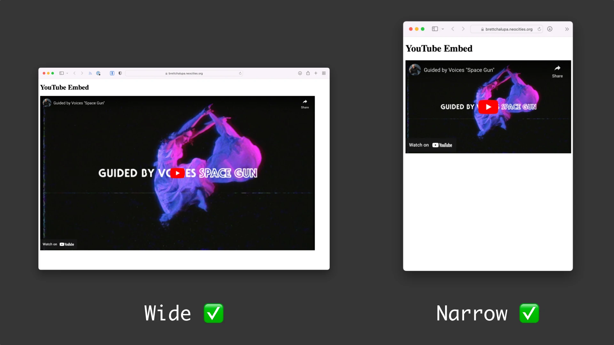
Concepts
- Packaging and distributing a web component
- Parsing out relevant info from a string
- Responsive iframes
- Supporting an existing API (YouTube's embed API)
- Maintaining aspect ratio when resizing
Extra Credit
- Support YouTube's various URL params for things like start time and whether or not to use the privacy enhanced mode.
- Properties for specifying max-width or just width of the video
Image Gallery
The idea here is to take a folder of images or a collection of links to images and render them in a grid and then be able to tap a given image to view a large version of it.
When viewing a single image, the user could use the left and right arrows to progress through the images in the gallery.
Concepts
- Rendering images
- Grid rendering
- State changing from grid to single image viewing
- Handling user input, from tapping to keyboard
Example
<ig-gallery>
<ig-img src="https://example.com/foo.jpg" alt="description of image" />
<ig-img src="https://example.com/bar.jpg" alt="description of this image" />
</ig-gallery>
Mock-Ups
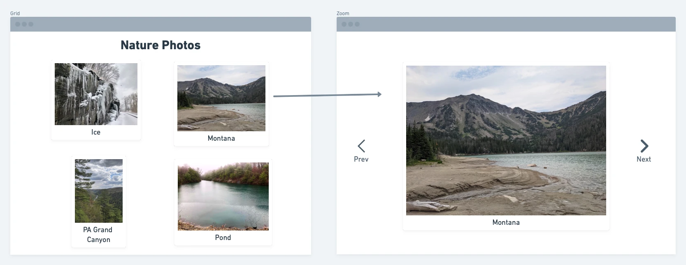
Resources
Need a zip of images? Okay, here's a zip of four images you can use.
Stretch Goals
- Play / pause to cycle through the images on an interval, maybe someone wants to display their favorite photos on rotation like a digital picture frame
Prose Renderer
The gist: build a web component that allows readers to configure text rendering options to make prose easier to read.
I tend to think of this as a library or component called Prose.js or Reader.js that is concerned with taking a nested collection of <p> elements in partidular and rendering them in a way that gives the user fine grain control over how it's rendered. Their preferences would be stored in localStorage so upon refresh their settings would load and be used across web pages (like chapters in a book).
The Kindle device and apps have decent control settings for this, as does Wattpad.
Configuration options:
- Text size
- Text alignment — justified or left aligned or right aligned
Spec
Usage:
- include the script to load the source for the component
- just use the component! wrap the output for the prose in the component:
<Prose>
<p>It was a dark and stormy night...</p>
<p>More stuff! More stuff!</p>
</Prose>
Tech
Any of the major web component libraries are appealing for this, in particular ones that can generate a portable component that can be easily loaded and dropped in like Stencil. Svelte and Lit appeal to me too.
Concepts
- Working with
localStorage—writing and reading - Building out a non-intruisive UI
- Overriding/applying styles to nested content
Mock-Ups
I've put together a simple mock-up of what this could be like:
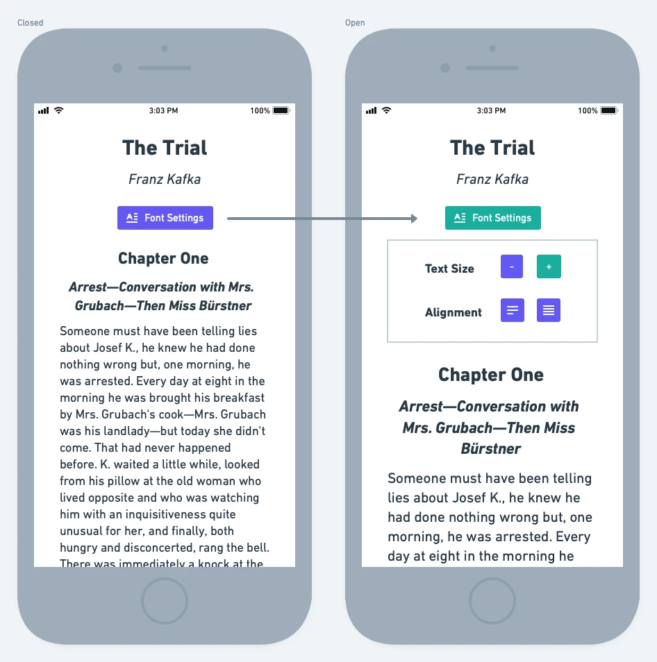
When the Text Settings button is pressed, it opens the widget. When it's pressed again, it closes it.
When the widget is open, tapping the settings automatically changes the text that's being rendered.
Due to limitations in the mock-up tool, I can't easily change the font or make the text justified, but I think the mock-up covers the gist.
Reference
Here's a screenshot of Instapaper's web text settings:

Extra Credit
- Support additional settings
- Line spacing
- Different fonts
- Margins
Music Player (Web Component)
The gist: build a web component for playing one or more music files.
HTML5 has rich events for interacting with audio. A web component that takes children that are audio files and then can play through them and handle common functionality like:
- Play
- Pause
- Volume
- Next/previous song
- Pick and play a track
- Play the next song in the list
Concepts
- HTML5 audio API
- Rendering the GUI for listing the tracks
- Rendering the GUI for the actual player
- Callbacks for various audio events
Spec
The mark-up could be something like this:
<music-player>
<mp-song>
<source src="horse.ogg" type="audio/ogg">
<source src="horse.mp3" type="audio/mp3">
</mp-song>
<mp-song>
<source src="cat.ogg" type="audio/ogg">
<source src="cat.mp3" type="audio/mp3">
</mp-song>
</music-player>
Mock-Up
Here's what the UI could look like.
When no song is selected and nothing is playing:

When a song is selected and is currently playing:

Tapping on the >> arrows would play the next song. Tapping << would go back a song.
Resources
Here are four SVG icons I made that you can use (or find your own icons):


{kind=link}
{kind=link}
Use your own audio files or download public domain Classical music files.
Tech
Lit and Stencil and Svetle interest me in particular for this. I think it'd need to be easy to load into any given web page or app.
Stretch Goals
- Song progress bar
- Ability to scrub through a song
- Loop through the playlist
- Shuffle
- Easy download for the files if someone enjoys them
See Also
Video Player (Web Component)
The gist: build out a video player component that makes use of the browser APIs to control the video.
I picture this as building a UI for dealing with a video, a lot like YouTube's or Vimeo's player. It would allow you to pause the video, change the volume, scrub to a specific timestamp, and make the video fullscreen.
The native video player is fine in most operating systems and browsers, but that doesn't mean more functionality couldn't be added. Also, we're here to learn!
Spec
<video-player src="/path/to/video.mp4" />
Concepts
- UI
- Events
- Working with media
Resources
Reference
YouTube player:
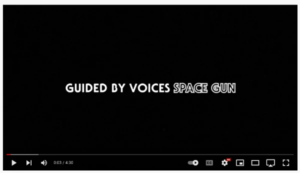
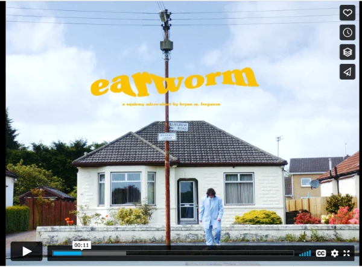
Extra Credit
- Buttons for 10s back, 10s forward
- Make the video display responsive
- Support multiple video formats and choose what to play based on browser and OS support
See Also
Component Library
The gist: build a collection of web components for common rendering needs in any given website.
When building out websites and web apps, there are some really common needs that basic HTML doesn't give you out of the box. The goal with this project is to extend HTML by giving developers some more of the commonly used elements. The library should be responsive, provide sensible defaults, be easy to override, and semantic.
Historically, Bootstrap or Foundation accomplish similar tasks: provide styles and JS for commonly used patterns in websites. They work fine and are widely used, but they're pretty brittle. You have to rely on having just the right DOM structure and classes for it to work.
What if instead all someone had to do to get an image gallery was use the <cl-gallery> tag or to get a card display they use <cl-card>? That'd allow the component library (cl) to provide the needed defaults with the ability for them to be overriden or themed as needed.
In many ways, this project is about creating a generic-ish design system for building websites and web applications. It will help you learn a component library and think about user interfaces in small, composable pieces.
Spec
Here are some of the foundational components I'd add:
- The other components in the Web Components section of Projectbook, of course!
- Button
- Card
- Navigation menu
- Grid
- Inputs & related form elements
Resources
- Shoelace — an open source component library built using Lit
- Atlassian Design System — component library built using React
Extra Credit
- Add more components, like
<cl-icon>for easy icons - Ensure styles can be overidden easily to customize it. CSS variables would be a good fit for this!
- Write (or auto-gen) documentation for the components
- Build out some websites and web apps using it! See it feels and what could be improved.
Web Apps
Web application projects are great for those learning web frameworks. Most of them are full stack projects, which means they require a database, a back-end to manage the data, and a front-end to render the user interface. They typically require the ability to create, read, update, and destroy (CRUD) a variety of data.
There are so many different technologies to use to build web applications, as well as varying methodologies. From using server-rendered forms to building a single page app (SPA) with an API, how you go about it will depend on what you're building and what you're learning.
The complexity of web applications can be deep, but rudimentary versions of the projects that follow can be built pretty quickly. Polishing, securing, and fleshing out web apps takes time, but something basic can be built in a matter of hours or days.
Whether you want to be a back-end, front-end, or full stack web developer, the ideas will be great for learning as they cover a lot of the common concepts like authentication, authorization, managing data, and building interfaces.
Technologies of Interest
Modern languages all have at least one web application framework that handles a lot of the core needs and setup. These frameworks will let you get building web applications pretty quickly.
- Django — Python web app framework
- Express — Node.js minimal web app framework
- Laravel — PHP web app framework
- Phoenix — Elixir web app framework
- Redwood — newer, opinionated TypeScript web app framework
- Revel — Go web app framework
- Rocket — Rust web app framework
- Ruby on Rails — Ruby web app framework; I've used this for over a decade, and it does the trick!
Web application frameworks alone might not be enough though, as you may need to pull in libraries from the JS ecosystem, especially for writing the front-end code (styles, mark-up, and JS). If you're wanting to use web components or a front-end framework, check out these libraries:
When it comes to building an API, GraphQL would be my technology of choice because of its flexibility and strong types. But there are some other options out there:
- Roll your own JSON API! This is fine for experimenting and smaller projects.
- JSON:API spec
- OpenAPI spec
- JSON Schema
Hosting
Because most web applications require some sort of server and a database, you'll need to configure the app to run somewhere. When building a project, you'll typically run what you're building on your own computer, which can serve requests to your web browser. This is great because it doesn't cost anything. The downside is that your project isn't accessible to others then. That's probably all right while you're learning. But if you ever want to make something that others can use, you'll want to deploy your application to a host. How you go about that is beyond the scope of this book, but there are lots of resources out there.
Linkbud
The gist: build an app that allows users to define lists of links that can be viewed publicly on the web.
This is useful for people linking to various profiles on social media, sharing an album on multiple streaming services, or even serving as a simple home page for someone. Sometimes referred to as "Link in Bio" sites, I think they're pretty nifty as simple directories people create for their projects.
Specs
Users should have the ability to:
- Sign up / sign in
- Create a list of links with a name
- Add, edit, delete, and reorder links on their list
- View the list publicly based on account and list slugs
- Support multiple lists for an account
Concepts
- Authentication
- Authorization (access control)
- A non-trivial UI
- Data modeling
- Rendering a web page from user entered data
Mock-Ups
Here's what the user inteface and user experience could be like:

When a user is signed in, they can view a list of their Link Lists. They can edit their existing ones or add a new one. The form has fields for everything that'd could be entered. And then when they create (or update) a Link List, they can view the public link on the web with the rendered links.
Stretch Goals / Extra Credit
- Add description with a rich text editor or Markdown support to lists to give more context
- Display icons for links to common locations like YouTube, Twitter, Reddit, etc.
- Upload an image for a list
- Email verification if signing up via email
- Sign up / sign in via a third-party service like Twitter, Facebook, Google, etc.
- Customize the list's display with a photo, colors, font, etc.
- Support deleting a list or making a list private
- Ensuring the URLs are properly formatted
- Sanitizing input for potential non-safe data
References
See Also
- Link List — not quite ready for a full stack web app? That's okay! What if you instead just build a static website?
Vinyl Download Code Redeemer
The Gist: users can enter a code they received with their vinyl purchase to download the digital version of the album.
I'd call this project Redeemy! It's make a good open source app.
Redeemy does not just have to for music downloads. It could be any digital file. It's a nice app for learning in that it can be pretty simple to start but expanded to be quite complex.
Spec
- Host a file on your computer or online storage
- Build a web page for redeeming a code
- If the entered code matches what you hard code in the back-end, then download the file
- If the entered code doesn't match, display an error
Concepts
- Validating input
- Delivering files
Mock-Up
Here's what the redemption UI could look like for a given item:

Now it's worth noting that the redemption page might be generic and not display the item attempting to be redeemed. That all depends on URL structure and how everything works. For the basic version, do whatever you want and have fun with it!
Extra Credit
- Build out an admin for musicians (or whomever) to sign in and upload their albums
- Add ability to generate codes
- Ensure there are no duplicates when generating
- What code structure can you use to ensure millions or billions of unique codes can be generated?
- Beware of similar-looking characters like 0 (zero) and O and 1 and l
- Expire codes after use
- Allows codes to be redeemed N times
- Allow files to be downloaded N times
- Display multiple files for download
- Render a grid of generated codes with print-friendly styles
- The infrastructure is set up for distributing digital files... what if there was some way to sell directly to people?
Examples
URL Shortener
The gist: Allow users to create short versions of links to make them easier to speak and share.
For example, https://some.place.example.com/foo/bar/biz being shorted to https://short.ly/abc123
Having a short URL can be nice for making it easier for people to type it in, whether hearing it on a podcast or reading it on a poster. Sure, QR codes sort of stole the show for the latter usecase, but it's still a good learning project!
Spec
- Build a web page with a form for entering a URL
- When the form is submitted, return a shortened version of the URL
- Ensure the slug of the URL (abc123 in the example above) is unique
- When the shortened URL is accessed, redirect to the stored URL
- If an invalid slug is accessed, display a 404 Not Found page
Concepts
- Accepting & validating input
- Algorithm design
- Storing & fetching data
- Responding to requests & redirecting
Mock-Up
Here's what the simple interface could look like:
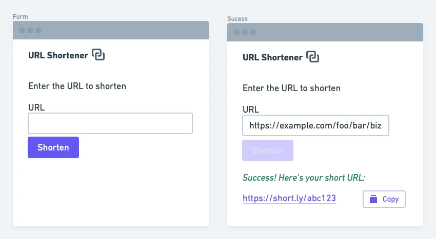
Extra Credit
- Validate the entered URL is actually a URL
- Make it easy to copy the generated URL to the clipboard
- Calculate the max number unique slugs that can be generated from your algorithm
- Allow users to edit the slug of the generated URL
- Ensure the slug is unique
- Add support for accounts so people can view the short URLs they created
- Track the visits to the short URL and surface to the owner
Reference
Read-Only API
The gist: build out a public, read-only API that serves a variety of requests.
When first learning how to build an HTTP API, it can be helpful to just focus on the structure of the requests and responding with data. This project is focused on fetching data from a database and responding to HTTP requests with that data, in whatever format you want. It could be a GraphQL API or a JSON API you design yourself.
Then, once you have this read-only API, you can build clients that render the data returned from the API. That's a great way to learn how to build GUIs driven by data from an API.
Spec
- Set up your database and sceham for your application to read from
- Have some way to load the data that your API serves; maybe you ingest the data from a spreadsheet
- Define read-only API endpoints to fetch and return the data
Concepts
- Data schema
- API design
- Building an API
Example
I'd like to build out a GraphQL API that returns the albums with songs by Guided By Voices. They have such an extensive catalog, that'd it'd be fun to build out a GUI to browse them.
query albumsWithSongs {
albums {
title
year
coverUrl
songs {
trackNo
title
}
}
}
Which would return something like:
{
"data": {
"albumsWithSongs": {
"albums": [
{
"title": "Bee Thousand",
"year": 1994,
"coverUrl": "https://example.com/bee-thousand.jpg",
"songs": [
{
"trackNo": 1,
"title": "Hardcore UFO's"
},
{
"trackNo": 2,
"title": "Buzzards and Dreadful Crows"
}
]
},
{
"title": "Alien Lanes",
"year": 1995,
"coverUrl": "https://example.com/alien-lanes.jpg",
"songs": [
{
"trackNo": 1,
"title": "A Salty Salute"
},
{
"trackNo": 2,
"title": "Evil Speakers"
}
]
}
]
}
}
}
I could imagine there also being support for:
- an argument that returns the albums released in a given year
- searching by album name and song name and returning results
- sorting results alphabetically or by release year
I've been interested in Rust and TypeScript lately, so I'd probably use one of those for building out this API.
Resources
- GraphQL
- Open API Spec
- JSON Schema Spec
- JSON API Spec
- public-apis List on GitHub — helpful reference for similar examples
Extra Credit
- Support pagination for large data sets
- Document the API so that it's clear how to others how to use it
- Add support for params like search query or filtering, whatever would be useful for the data you're loading
- Host it somewhere for others to use (especially if it's useful or you publish libraries publicly for others to use)
See Also
- Client App — build a GUI for rendering the data returned by your API
- API Wrapper — write a wrapper for consuming the API you just built in a given language to make it easy for others to integrate with
RecipeHub
The gist: GitHub for recipes! But for food, not software.
I love cooking and baking. It's seriously so fun and creative. I love taking recipes and adjusting and tweaking them to my liking. The neat thing about recipes is that they're not observed by copyright! The photos, the descriptions, etc. are, but the actual ingredients and steps aren't. That always gets me thinking about how awesome it would be if there was a web application for people to share their recipes on. It would be centered around loading quickly, browsing by tags, collecting your favorites, and copying and modifying others' recipes.
I'm hungry and excited just writing this!
Specs
- User accounts (authentication)
- Recipe management
- Data model for a recipe:
- Name
- Description
- Ingredients
- Instructions
- Data model for a recipe:
- Viewing another user's recipes
- Fork a recipe (make a copy to edit and adjust to your liking, but maintain an association to the original)
Concepts
- Authentication
- Permissions
- Data management
- Network graph
Mock-Up
There are a lot of features that could exist for this app, and mocking them all up would be a lot, but here's a gist of what some of the key elements of the UI could be like (viewing your recipes, viewing a recipe, and the recipe form):
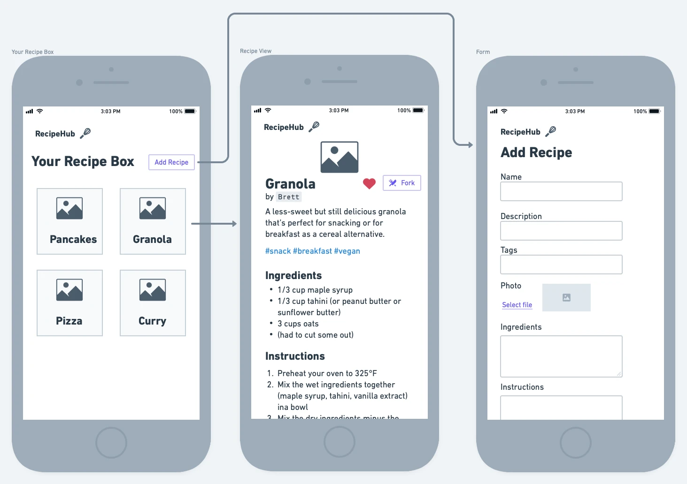
Extra Credit
- Add ability to favorite another user's recipes & view your favorites
- More metadata like prep time and cooking time (and thus total time)
- Image upload for a recipe
- Tags for things like vegan, breakfast, etc. where you can discover similar recipes
- If you build the back-end with an API, you could then build out a mobile app that consumes it! That would be pretty handy when cooking in the kitchen
- Dream feature: when viewing a recipe on the mobile app, prevent the phone from sleeping
Wishlist
The gist: A web app and/or API for adding products across various online shops to a common wishlist.
I've done a little online shopping in my life! I've done a little online window shopping too. I like saving things I'm interested in and coming back to it later to see if I'm still interested. But I don't have a good way to maintain that list and mark items as purchased across any given website. Enter: WishIt! ✨
Okay, that's kind of a silly name. But naming all of these projects is no easy task.
Spec
- You'll need authentication for this (or just store data in
this.localStorage) - Have a simple form for entering URL to add it to the wishlist
- Validate the URL
- Parse the title from the web page of the URL for the item's name
- Save the item to the user's wishlist
- Allow items to be:
- Marked as purchased
- Deleted
Concepts
- Crawling a web page
- A todo app that isn't a todo app
Mock-Up
Here's what the interface could look like:

As you can see, it's pretty simple to start, which is nice. It's the fetching the data from the web page that's a bit more of a challenge with this project.
Extra Credit
- Parse out additional info like the title, photo, price, and description from the URL
- Supporting this for any given website can be challenging, so pick one or two to start
- Some pages might have Open Graph tags for products, which would make this a lot easier, reference
- Build out a browser extension that takes the current URL and submits it to the current user's WishIt ✨
Blogging Platform
The gist: Allow users to author long form content in Markdown and render the posts as web pages.
Ah, is there anything more generic than a blogging platform? Well, I guess a todo list. But there's something about blogging and blogging tools that I always go back to and find comforting. It must be something about the joy of publishing something online with relative ease.
This project is great for those learning a language and/or a framework and who would be interested in maintaining their own blog. The data model is often pretty simple for getting started, and you can always expand it and add functionality as you need it.
I'd focus just on text to start. Text can get you a long way. Then explore things like uploading and hosting images, that sort of thing.
If I were to build this project, I'd call it Blogbud or something like that. Are you sick of the *bud names throughout Projectbook? Well, I'm not yet. Sorry.
Mock-Ups
Here's what a simple interface for managing posts and then viewing a post could look like:
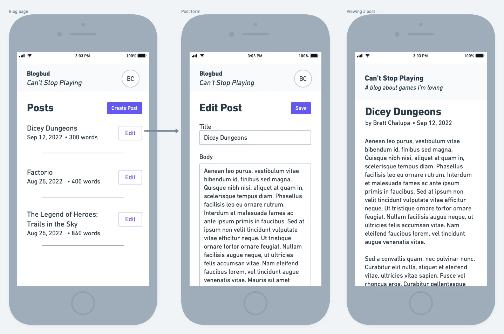
Specs
The following features would be nice to have for the basics:
- Authentication for users (a.k.a. someone signs up)
- Blog creation
- Post creation for a blog
- Post editing
- Post deleting
- Viewing a post as a reader
Data Model
Here's a simple outline of what the data model could be like:
- Posts
- blog_id — the blog it belongs to
- created_at
- published_at
- updated_at
- title
- slug
- body
- authors/users association
- Blogs
- name
- description
- authors/users association
- Users
- encrypted_password
- name
- photo
Concepts
- Authentication
- Admin for authoring and managing posts
- Rendering Markdown as HTML
- Access control/permissions/authorization
Extra Credit
- Allow posts to created as drafts but not yet published
- Schedule posts to be published in the future
- Generate an RSS and/or Atom feed for the posts
- Support image and other file uploads in the post body
- Support attachments to the post object
- Images for rich sharing data
- Audio files (with a special RSS feed) and you've got a podcast!
- Allow posts to be tagged for readers to browse posts by tag
- Add an easy mechanism to allow readers to heart a post to show they enjoyed it
- Unique it by IP or something along those lines
- Support multiple blogs for a given user
- Image uploads
- Caching the pages or even generating a static site
- Search
References
- Wordpress
- Ghost
See Also
- SSG GUI — building an app as an interactive front-end for a static site generator, sort of like the Admin aspect of the blog web app project
- Web Comic Platform — similar in nature but more focused on hosting image content rather than the written word
Web Comic Platform
The gist: build a web app that makes it easy to upload, share, and read the pages of a web comic.
Web comic creators often create the pages of their comic and then publish them online one page at a time. Maybe they publish them in batches or have a vertically scrolling comic with multiple images. Wordpress with a plugin has been a long-standing way to handle this, but like a lot of Wordpress plugins, it feels pretty tacked on.
The idea here is to build an publishing platform specifically tailored to those making web comics by making it easy to have multiple comics, each with many posts, which contain the images of the comic.
Mock-Ups
Really similar to Blogging Platform but support uploading and assocaiting multiple images with each post.
Concepts
- Image hosting
- Authoring admin
- Authentication
- Authorization
Specs
- Sign up for an account
- Create a series
- Add posts for a series
- A post contains one or more images
- A post contains an optional body of text
- The images and posts for a series can be edited or deleted
- Readers can view the posts and read through the series
References
Extra Credit
- Generate multiple RSS feeds
- One for each series
- One for everything
- Add support for multiple users for managing comics for a given site
- Reader account interactivity
- Could follow series they like
- Heart posts to show their support
See Also
Content Management System (CMS)
The gist: build a web app that allows people to define a content model and create records that follow it.
Ah, yes, the good ole Content Management System. Nearly as generic as the todo list and similarly as elusive in terms of finding an actually good one. But they are fun to build because they're essentially like a more complex blogging platform and something most businesses (and people) find they need at some point or another.
To me, a CMS does more than allowing blog posts or pages to be defined. It allows the actual data model to be defined. This is mildly complex, as you have to have composable chunks (fields) that can be put together and then used to build the Admin GUI for managing the content. This is really powerful.
This essentially allows people to build complex, content-driven websites. The platform would have less of a focus on the design of the website and more on being able to create user-configured forms for the data.
Specs
- User authentication
- Authorization for access
- Define content models
- Users can manage data for the configured content models
- Render public site based on the created content
Extra Credit
- Templates for commonly used content models
- Optional and required fields
References
Story Publishing Platform
The gist: build an application that allows writers to publish their stories online.
As a writer of all sorts of words, from short stories to novels to poems, I'd love an open platform and community for sharing my stories online. This is also a great project for learning because it's got similar needs to a blogging platform but a bit more complex.
I also think a community-supported, ad-free, open-source platform for something like this could thrive!
I call this idea StoryHub.
Mock-Ups
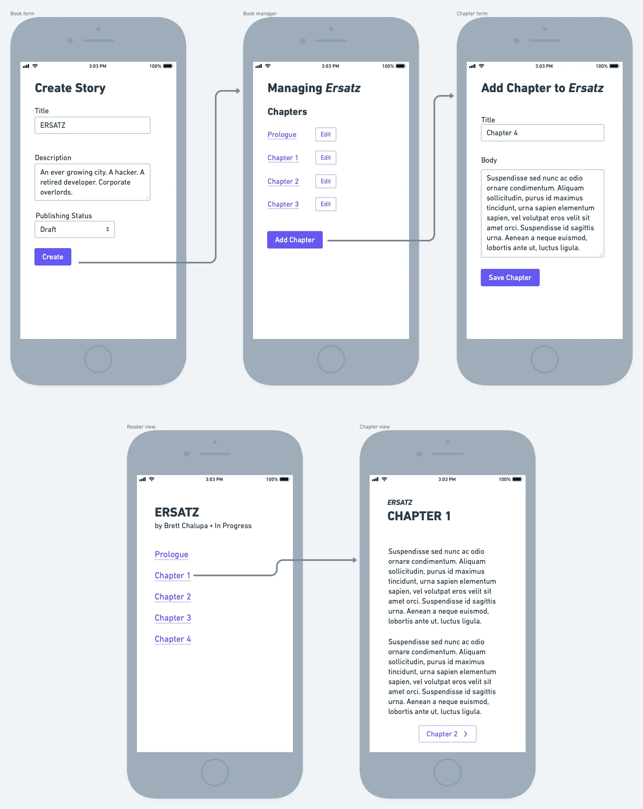
Specs
Even if the accounts are the same, I think there are two distinct usecases here. One for the writer who publishes stories. And one for the reader experience.
Writer
- Create books
- Title
- Description
- Add chapters to a story (and edit and delete)
- Title
- Body of Markdown
Reader
- Read stories
- Navigate between chapters
Thoughts on Tech
I really think this project would benefit from being driven by an API and being built with the idea of supporting multiple clients. Reading on a mobile device with an app is a great experience. As can reading on the web. I'd build this with a GraphQL API.
Because the UI needs are ultimately pretty simple (centered around rendering long-form text), it could also be a good project for experimenting with tools like React Native, Ionic, etc.
Extra Credit
- Image upload for a book
- User photos
- Support additional metadata for a story (tags could be nice, license too)
- Reorder chapters
- Generate RSS feeds for a given book and author
- Easily export epub and PDF versions of stories
- Reader account feaders
- Follow stories and/or authors
- Feed of new chapters for followed stories
- Mobile apps for reading (and even authoring)
- Tipping support or Patreon integration
Concepts
- Authentication
- Authorization
- Content authoring and publishing
- Content-driven UI
References
See Also
Help Site Manager
The gist: build a web app that allows teams to create a public knowledge base about their product for helping their users.
I think an open source tool for a company to build out and manage their Help site would be really rad and fun to build. It's more specific than a Content Management System, while also having a lot of the similar needs.
Specs
- Admin area with accounts to manage the articles
- Ability to add, edit, and delete articles, which likely have a title and body
- Rich text editor for adding screenshots and a variety of text
- Public facing website for viewing the articles
Game Tracker
The gist: build a web app and API for keeping track of your game library.
What you're playing, what you've finished, what you want to play. They're all really fun things to track. And organizing one's collection digitally scratches a certain collector's itch.
This app could be pretty simple to start, and it could expand in its complexity pretty organically.
No clever names for this project yet!
Mock-Ups
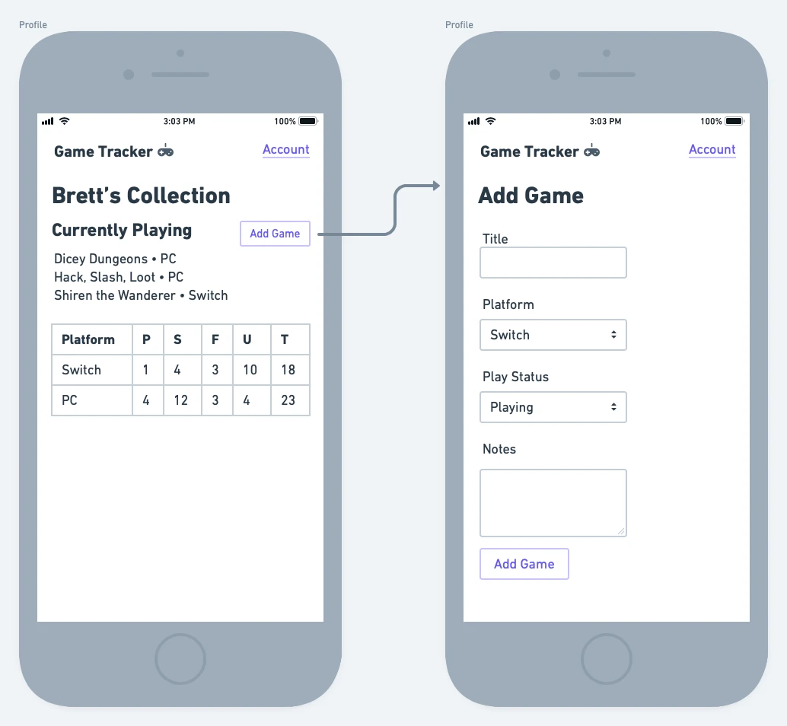
Specs
- Authentication (user sign up)
- Add games to library
- Platform
- Play Status (unplayed, started, playing, finished, abandoned)
- Notes
- Render library
- By platform
- By completion
Extra Credit
- Support rating and writing review thoughts on each game
- Favorites list
- Add friends
- Pull in image data for games
- This doesn't have to be for games! It could be for any media, really.
- Badges based on collection size, completion rate, etc.
- Expand game metadata (playtime, region, ownership status, etc.)
- Steam import
Tech Thoughts
This project would be a great candidate for building a rich GraphQL API that clients can consume. This would allow the web app to consume it and have a nice experience for managing one's library. And it would allow for mobile app clients to exist to manage what one's playing on the go.
I think an open-source, community-driven project like this could really thrive.
Additional Thoughts
The desire is instantly there to try to make this platform contain a comprehensive database of games for all platforms, regions, etc. That's a huge project. One of the beautiful things about Backloggery it's so simple and doesn't include that. Sure you have to enter details manually, but having that control is quite nice and I think makes it easier to manage.
Maybe there's some middleground where auto-complete can be used for existing entries? I'm not quite sure. The manual entry is clearly easier for starting out though.
References
- Backloggery — very much the inspiration for this idea; simple and effective UI with great stats
- Letterboxd — movie tracking app
- Discogs — music tracking
- How Long to Beat
- Goodreads — book tracking app
See Also
Social Network
Allow users to sign up for an account and author simple text-based updates with a maximum length of 256 characters.
Features:
- Authentication + sign up
- Create, edit, delete posts
- View a profile
- Follow a user to see their posts in your timeline
Examples
- micro.blog
- twitter.com
- Mastadon
Concepts
Stretch Goals
- Reply to posts to notify other user
- Favorite posts
Restaurant Ordering Platform
The scope of this could really vary in its breadth! But the gist is to create a web app that allows restuarants to create a website that lets their patrons order online for pick-up. It would allow them to add menu items with their price and optional description.
Patrons could then view the website for the restaurant, add menu items to their order, and then pay for it to play it.
When an order is placed, the restuarant would then see in their dashboard an order has been placed. They can mark it as ready for pick up when it's been completed.
This would then notify the patron their food is ready for pick up.
I'd call this GrubBud, or maybe that's too close to the real thing. How about iMenu and get all 2000s Steve Jobs on it??? Call it what ya' want!
Wireframes
Concepts
- Admin for restuarant to manage their menu
- Public website for ordering w/ a cart with line items
- Payment processing
- State managing for the order with effects at various state changes (sounds like a state machine to me!)
Scope
This is basically a full stack web app. For learning purposes, you could have it just be for one restaurant with HTTP basic auth for the Admin area. Or build out an entire sign up flow! Whatever you want.
But there's a lot to this.
If I was an educator who was teaching a course or writing a book on building web apps, I would use this as a class project because it is non-trivial, has levels of access control, includes interacting with APIs for payment process and notifications, has state management, and very likely has a database. It's also not just another blogging engine or Twitter clone or todo app. Plus! A lot of people can relate to and understand the concepts behind this because they've placed orders for food online. And if they haven't, if they've eaten out, the concepts are close enough to map to the technological needs.
Stretch Goals
- Payment processing with Stripe or something similar
- Order receipt web page with current status, could even poll or use websockets
There are so many business needs that could exist to make this more complex:
- Hours of business
- Line item customizations/requests
- Uploading restaurant branding
VideoTube
Essentially a YouTube clone! Allow users to sign up for an account and upload videos to their account.
Concepts
- Processing large files, specifically videos
- Hosting files, then rendering them
- GUI for playing the media in the browser
- Authentication
References
- YouTube
- TikTok
Stretch Goals
- Encode a variety of video formats into a consistent one
- Encode videos into multiple resolutions
Simple Commerce
The gist: build out a web app that allows sellers to add products that can be purchased on a public website. When a product is purchased, it creates an order for the seller to fulfill.
An eCommerce platform is simple to grasp since we use them on the regular, but there's a lot of complexity under the surface. It is certainly possible to build a simplified version, especially for learning purposes.
If you're interested in learning a new web technology, this project covers a lot of what you'd need to learn. Whether it's a server-rendered web app or a static site that works with an API, there's a lot going on.
Specs
- Seller authentication
- Add products in admin
- List products in storefront
- Add items to a cart
- Accept payment to pay for items, Stripe is great for this!
- Create an order for the purchased products that's visible in the admin
Concepts
- Non-trivial data models
- Storing data in the database
- Payment processing
- Authorization (admin access vs public storefront)
- Admin management area
- Public rendering of data
Stretch Goals
- Associate photos with a product
- Digital file uploading & delivery
- Inventory management system
- Emails for both seller and buyer
- Allow sellers to customize their web storefront
References
Website Builder
The Gist
Build out a web app that lets users create simple web pages graphically with no coding knowledge. This allows people to build web pages with a variety of content to meet their needs.
Blocks to start with:
- Header
- Text
- Image
- YouTube Embed
Ideally blocks would be able to be reordered within a given page.
The selected blocks for the page would get persisted in a database associated with the user's site.
And then, finally, that page would be able to be rendered and viewable in the browser.
Scope
This is an entire app! It's large in scope. It'd really have a lot going on. The web interface for building. The renderer. The data model for the blocks. The user and site with (minimal) management.
[wireframes]
[assets]
Concepts
There's so much here!
- Defining a data model for the blocks, which is decently complex
- Storing the built pages which have a pretty complex data model
- Building a complex UI
- Rendering a complex page from stored data that needs to be processed properly
Technology
General Graphical Apps
The following projects are apps that require a graphical user interface (GUI). They're platform agnostic, so whether you want to build an app for Android phones or Linux desktops, hopefully you'll find something to dig into.
While you could certainly build web applications for these projects, there's something different about building desktop and mobile apps that's appealing.
Technologies of Interest
- Swift UI — for building apps for Apple devices
- gtk — cross-platform desktop app toolkit with support for many language bindings
- Flutter — cross-platform app building library in Dart from Google
- React Native — build mobile apps using React components
- Ionic — a mobile SDK that uses web components
- Electron — build desktop apps using web technologies
- Xamarin — cross-platform apps built with .NET and C#
- Kotlin — Android development
- Qt — cross-platform app toolkit, seems a bit enterprise-y
Calculator
Ah, yes, the old calculator. The TI-98. Well, that's pretty advanced. But here the goal is to build a simple calculator that can do the basic mathematical functions. Ideally it'd be able to add, subtract, multiple, divide.
In a very simplistic way, what this project is doing is:
- Taking user input and sanitizing it
- Passing it along to the math library in the language you're using
- Displaying the result
The platform for this could be really just about anything!
- Command line math tool that parses a string with an equation and prints the results
- Desktop or mobile app GUI
- Little web app or component using TypeScript or JavaScript
This is a good project for trying out all sorts of languages and libraries. It doesn't require a data store or networking. It doesn't require an overly complex UI. But it's also not extremely trivial. There's some state to manage and data to sanitize.
[screenshots of examples]
Stretch Goals
- Add more advanced mathematical computations like sine, log, square roots, etc.
Flash Cards
Habit Tracker
The gist: build an app that lets users succcessfully mark when they've completed a daily habit.
I find it helpful to track any new habit I want to start. Maybe it's practice guitar or meditate. Maybe it's go for a walk.
This project could be coded for any platform really—from a simple mobile app to a desktop app to a web app with a back-end. It's non-trivial while still being simple.
How you store the data is totally up to you and how ambitious you want to get. If you build this for the web, you could initially use localStorage. For mobile, use whatever the native API is for data storage.
Spec
- Add habits
- Mark habit as complete for a given day
- Show habit as incomplete the next day and allow it to be completed again
- Show number of days in a row without missing
- Ability to delete habits that are no longer relevant
Concepts
- GUI for interactions
- Dealing with some light time series data
- Simple data modeling
- Data storage
Mock-Ups
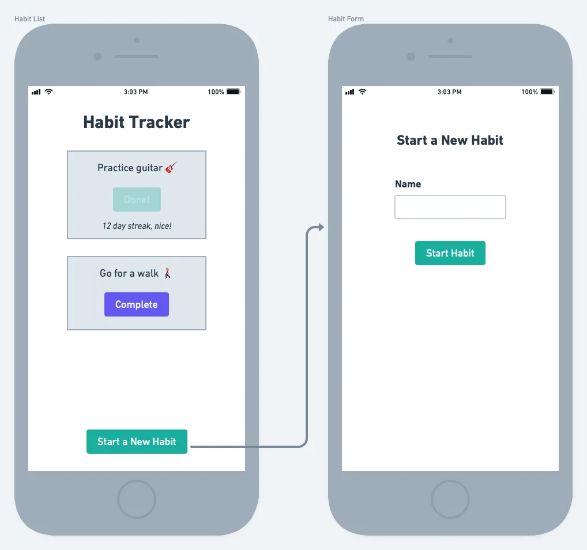
Reference
Stretch Goals
- Calendar view showing when which days a given habit was completed
- Reminders / notifications
- More or less than daily completeability (did I just make that word up?)
Request Manager
The gist: build an app that allows you to manage a library of HTTP requests with response display.
When building or integrating with an API, it's helpful to be able to organize a collection of API requests and view the responses to see how the API is behaving. This app would allow users to create request objects with a URL, relevant header information, and any body contents that then get sent along. The response, including the body, is then rendered.
I think this would be ideal as a desktop GUI app.
Mock-Ups
The GUI, especially for a basic version, could be as simple as:

The left column has the requests displayed. You select one and it renders the details in the main pane. There the request details can be specified and the response can be rendered.
Grouping similar requests could be as simple as having different project files that get opened, closed, saved, etc.
Specs
A very basic version would be to handle just GET requests:
- Create request objects
- Specify URL
- Make the request
- Display the response body (hopefully nicely formatted)
Concepts
- Making requests
- Parsing responses
- HTTP
- Desktop GUI
Extra Credit
- Support other HTTP verbs (PUT, POST, DELETE, etc.)
- Specify headers
- Specify body
- Group together requests
- Specify shared variables for grouped requests
- Save the response body to the computer
- Build a flavor of this specifically tailored for GraphQL requests and schema reading
References
See Also
Notebook
References
- Bear for Mac and iOS
- Simple Note
SSG GUI
The gist: build a desktop application for managing the content of a static site generator.
I've never been more ashamed of myself for titling something "SSG GUI" but here I am. Ashamed. And with a title of something called SSG GUI.
Hold your horses for a minute before you throw your reading device in the trash at the gall of someone to create anything with a title as obtuse and terrible as SSG GUI.
I actually think this is a really good idea. Hear me out.
There are at least a million static site generators. There's probably not a great reason for having so many, but it seems like it's the proving ground for any modern language to have a fast SSG. Overall, I love SSGs, especially as a developer who spends a lot of time thinking in plain-text. To have a lightweight website tool that generates files that can be hosted pretty much anywhere without having to manage a database and server is fantastic.
But command line SSGs aren't the most friendly thing in the world, even though I think a lot of people would be interested in authoring content in Markdown and publishing their website using one. What if it was possible to do that without the need for the command line?
I think wrapping a static site generator in a GUI would be possible and valuable. The GUI would essentially be a Markdown editor that sites on top of the sites files. The app could use Git under the hood for creating and managing versions. Hosting and deploying could be configured for the host of choice, all within the GUI. Image uploads would be as simple as copying the selected into the proper directory and referencing it with Markdown. And! If the person ever wants to look under the hood and modify things directly, they could, since I think this GUI would aim to maintain full compatibility with whatever SSG it sits on top of.
There's a lot here to process! Maybe something like this already exists. I sort of don't want to know. Even if it does, it'd still be a great learning exercise.
Mock-Ups
TODO
Concepts
- Integrating with an existing command line tool/library
- A mildly complex GUI
- Publishing
Spec
TODO
Tech of Interest
gtk-rs + Zola
See Also
Book Authoring Tool
A desktop and/or mobile app that allows users to enter in rich-ish text for writing prose and poetry, organize it into chapters, and then export it in a variety of formats like PDF, ePub, HTML, etc.
Would/could use some sort of sync
Book Library
Essentially Calibre!
Video Library
Comic Reader
The gist: build a program that opens up a zip file of images (without extracting them) and allows the user to flip to the next page until the end of the archive.
DRM-free comic files are generally found in a few different archive formats:
.zip-- just a zip collection of images.cbz-- just a zip file, from my understanding- [rar one???]
And then within could be any number of image formats. JPGs, PNGs, even TIFFs.
What this project exercises:
- Inspecting the contents of an archive file
- Rendering images potentially in a variety of formats
- Handling user input to go the next page or previous page
[link to examples of free comics in the format]
[examples of the UI or wireframes]
This project is pretty GUI heavy but has the added complexity of viewing the image files within the archive.
Some ideas for tooling, technology, and platforms:
- iOS/iPad OS/MacOS -- a really good project for learning Swift on those platforms
- Android -- I think a pretty good project for that, like learning Kotlin
- Desktop GUI app -- something like GTK or QT would make a good fit or even Vala or rust-gtk (check name)
- Electron -- this would be a pretty fun little desktop project for Electron if you're a web dev interested in learning how to use it. You could leverage your web skills while learning that.
You could leverage a library to open up an archive and view the files or you could code that yourself using the language's standard library. There's lots of deep dives that could be done here.
Edge Cases
- What happens if the archive doesn't contain any images?
Optimizations
- Is the archive being loaded into memory or is there a way to load only the current image into memory?
Stretch Goals
- Support PDFs since some comics and books are in PDF format
- Make the UI be able to be changed in size while maintaining the original aspect ratio of the page
- Browse mode that renders thumbnails of all of the pages for easy browsing
- Displaying a prompt to open the next archive in the directory when the end of the current file is reached (i.e., read the next issue)
- Single page view vs side-by-side spread view
- Support reading right to left instead of left to right for comics like manga
- Big stretch goal: library that manages comics that have been imported or that exist within a directory and keep track of those that have been read and those that haven't
Photo Viewer
Client App
The gist: build out a graphical interface for reading and rendering data from a public API.
Whether building a desktop app, a native app, or a web app, a really common need is being able to fetch data from an HTTP API and render that data.
Spec
- Stand-up your GUI app
- Fetch data from the API
- Render it!
Resources
- Read-Only API project — if you built a read-only API, even one you just run locally, you could build your client app to read that data
- public-apis List on GitHub — helpful reference for similar examples
Concepts
- Consuming an HTTP API
- Data-driven UI
- Translating API data into data structures in your client language
Examples / Mock-Ups
To continue with the Guided By Voices discography example from the Read-Only API project, the client app would render the album details and allow the songs to be viewed. Here's a mock-up of what that could be like:

Technologies of Interest
- Any web component framework like Svelte, React (Next.js in particular), Lit, Stencil, Vue, etc.
- gtk-rs for building a desktop GUI
- Flutter with Dart
- Swift for Apple platforms
Extra Credit
- Cache (store) the results locally so the application can work offline
- Make your UI handle long strings nicely, this is a common issue
See Also
- Read-Only API — building out an API that could be consumed
- API Wrapper — writing a wrapper for an API (your API if you want) to make it easier to work with
File Sync
Basically Dropbox
Would have many components:
- File storage location
- Client tool that manages downloading and uploading, w/ GUI to manage this process
- Server tool that keeps track of files; likely with web GUI too
Password Manager
Okay! Heads up here. This is obviously a risky one. I probably wouldn't release this as open source unless you're knowledgable and confident. Maybe keep this one closed source and be wary. Just because wow! There seems like there's some risk here with sensitive info.
Also, I'm not a security or crytopgraphic expert. So, like, wow! There's a lot to consider here and learn. But that's the point of these.
All right, enough caveats. Do and share your own risk!
But the gist of the idea is to build an app that can do the following:
- Generate secure password of varying length and complexity
- Keep track of generated passwords
- Be able to associate a username, email, URL, etc. for the password
- Encrypt all the stored info
- Be able to decrypt to get the data for yourself to use
What you'll learn:
- UI for creating, managing, and viewing the generated passwords
- Storing the data
- Crytography with securely storing the data so others can't view the data
[screenshot examples] [wireframes]
Technologies for potential exploration:
- GTK for desktop building
- Native desktop libraries for Windows and Mac
- Electron could be good for this I think! Just to learn and experiment and leverage existing web knowledge
Stretch Goals
- Oh gosh I mean this is basically building out an entire app
- Browser extension
Introduction
Games are a great way to learn programming because they contain a lot of concepts that vary in complexity, from loops to arrays to input to rendering graphics to data modeling. Game rules often translate nicely to programming logic.
But games can also be challenging because there's so much going on! There's music, graphics, input, text, and more to manage. It can be a lot to digest and understand. Starting with simpler games will help you understand core concepts and build up from there. It's best to not start by building your dream fantasy anthropomorphic MMORPG.
Most languages have a way to program games in them. While there are pros and cons to different languages, don't worry too much about that when you're learning. The skills in one language will apply to another if you so choose to switch.
Game Libraries & Frameworks
I recommend using libraries and frameworks when learning programming via making games. Engines like Unreal, Unity, GameMaker, and Godot are all worthwhile and will help you make games, for sure. But they abstract (hide) a lot of what's happening in a way that isn't always intuitive when learning to code. You certainly can and should use those if you're interested in them! But a lot of the game projects in Playbook are simplistic and geared towards coding outside of a GUI-based game engine.
What follows is a non-exhaustive list of game libraries I've used in a variety of capacities and recommend:
- Bevy — Rust
- Ebitengine — Go
- Fyrox — Rust
- Gosu — Ruby
- HaxeFlixel — Haxe
- LÖVE — Lua
- MonoGame - C#
- Phaser — JS
- Pixel — Go
- pygame — Python
Assets
Having to make the assets of a game while learning how to code can be a lot. It's tempting to try to take it on all at once, but trying to learn how to make music, sound effects, art, game design, and code all at the same time is a recipe for exhaustion. Trust me, I've tried it.
You can instead make use of assets made by other gamemakers and artists, many of which are free. Check out OpenGameArt and the Game Assets on Itch.io.
Snake
Rock, Paper, Scissors!
Turn-Based Battle System
Dungeon Crawler
References
- Shiren the Wanderer
- Hack, Slash, Loot
- The Binding of Isaac
2D Platformer
Extra Credit
- A fun alternative to this idea is an auto-running platform where the only input is to jump. This works especially well for mobile devices where input for precise platforming is slightly limited.
Alien Invasion
The gist: top-down game where waves of aliens swarm towards a colony of people.
Aim is to see who can get the highest score and last the longest. The game should get more and more difficult with each wave. There could be different weapons and upgrades.
Interesting aspects to me are the top-down nature, controlling with mouse and keyboard, enemy AI, building out the map, and making the game feel good.
References
- Nuclear Throne
- Horde mode from Gears of War
- Zombie mode from Call of Duty
Contributing
Do you have ideas for projects that'd make a good candidate for those learning how to code? Additions by the community are more than welcome!
Did you work on a project inspired by the book? Add links to your source code to the project to help others.
View the Projectbook source on GitHub.
Contributors
I hope one day I'll be able to add others who have contributed to this!